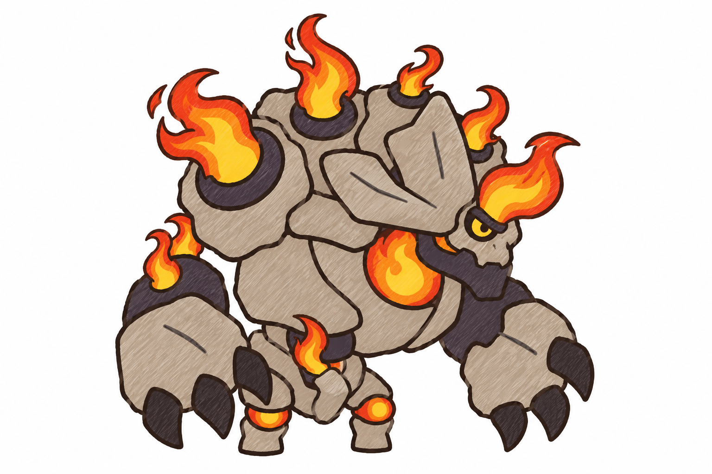
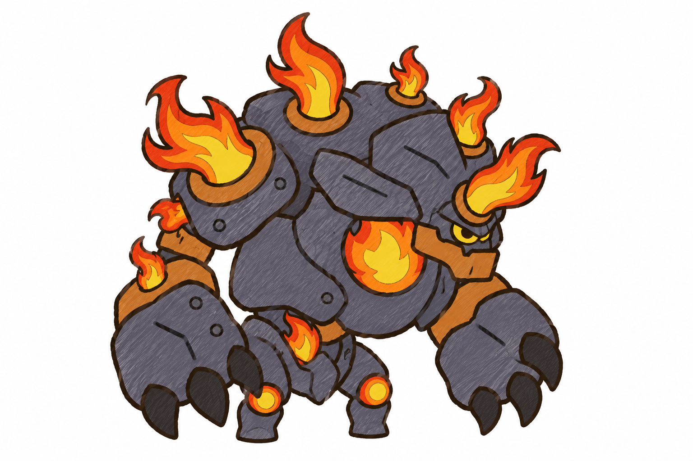
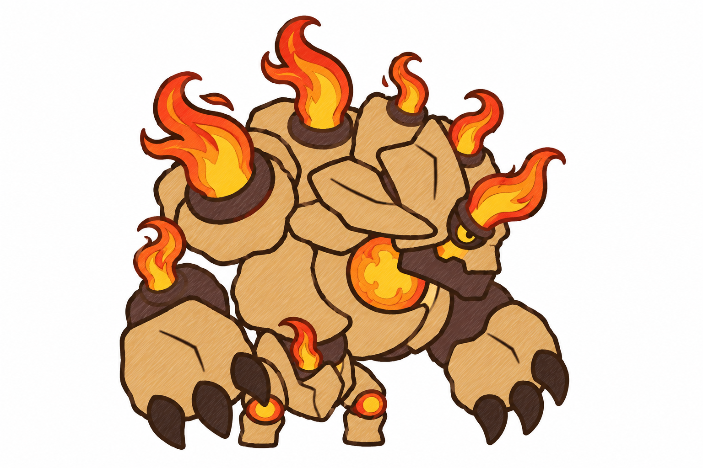
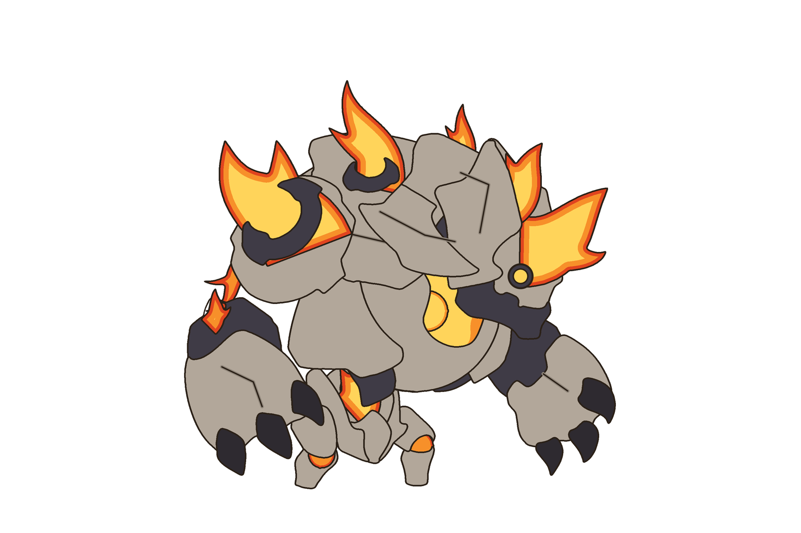
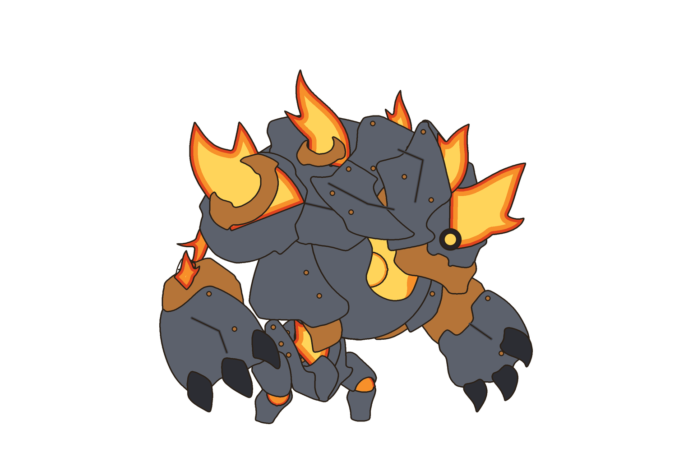
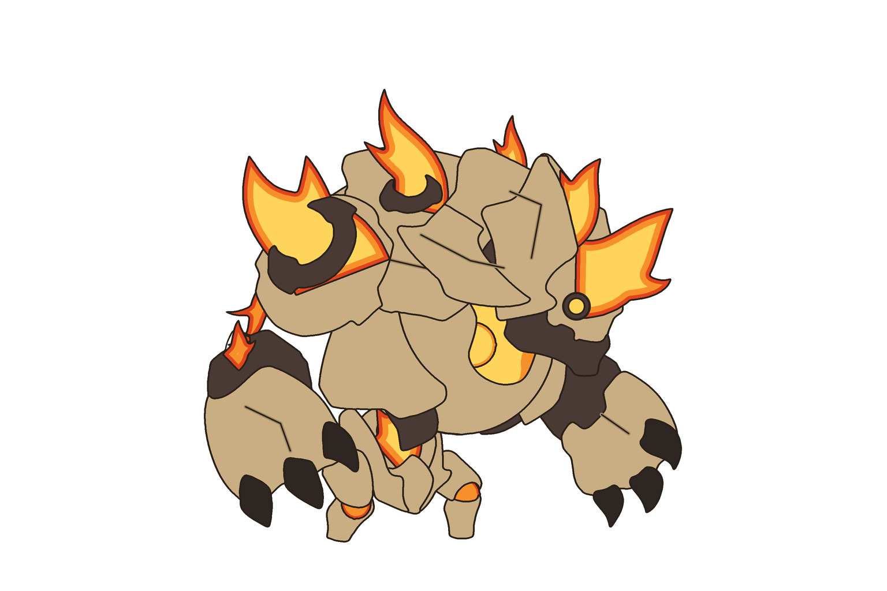

Giữ dáng con gốc (golem gù nhìn phải, mặt nạ đầu lâu thấp phía trước, một mắt, hàm riêng, vỏ ngực chữ C, tấm vai tròn có vòng đế, hai tay vuốt chạm đất, hai chân ngắn). Mọi gai đỏ → lưỡi lửa phụt từ lỗ có vòng viền; khối cầu đỏ → lõi lửa; gối → dung nham. Ba hướng chất liệu là đề xuất của tôi.
Đá xám tro ấm, vòng lỗ lửa / cổ tay / hàm than chì, vuốt đen than.

Sắt xám xanh có vài đinh tán, vòng lỗ lửa / cổ tay / hàm đồng thau, vuốt sắt đen.

Đá vàng cát, mảng phụ nâu than, vuốt nâu đen.



